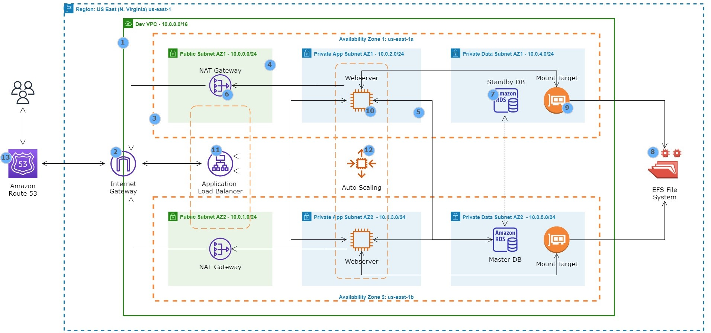
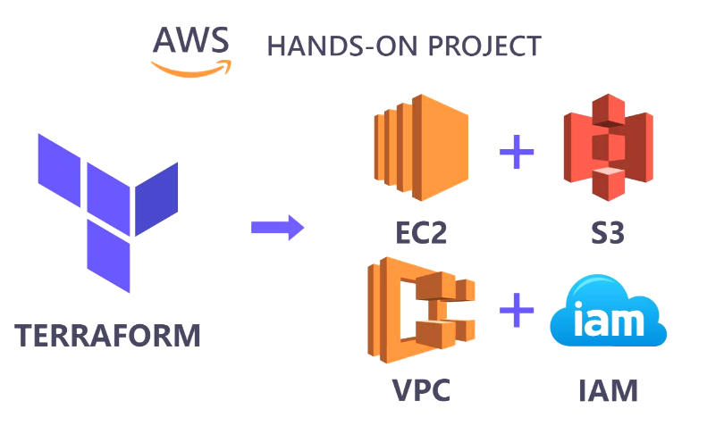
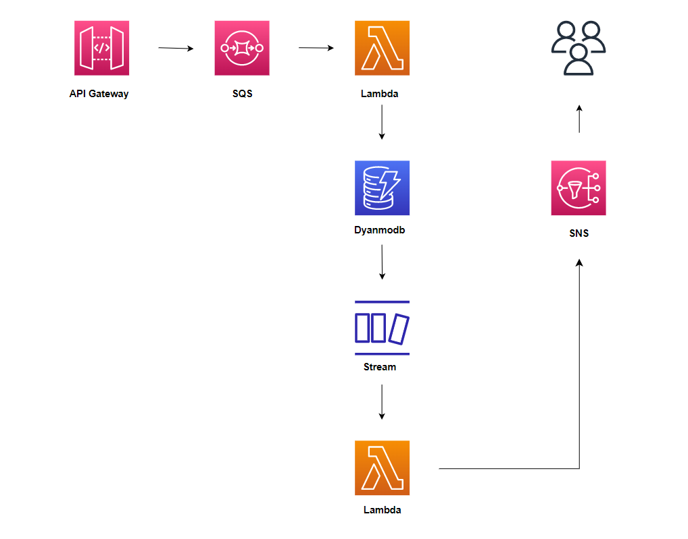
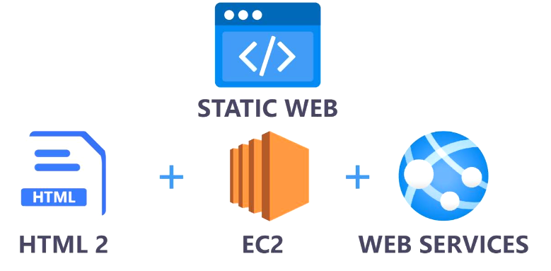
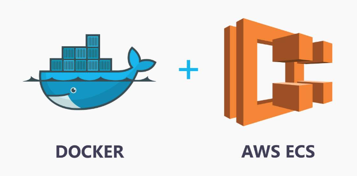
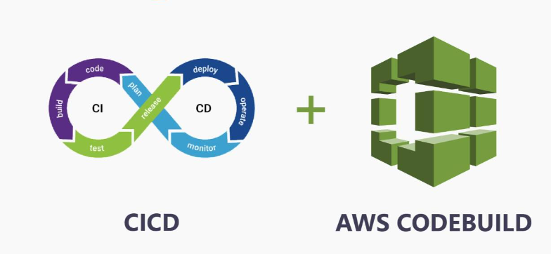

This project outlines the comprehensive procedure for hosting a fully functional WordPress website on the AWS infrastructure, tailored to meet the demanding standards of production-level performance, security, efficiency, and reliability. .


This project focuses on deploying a dynamic web application on AWS using Infrastructure as Code (IaC) principles with Terraform. Docker containers are utilized for packaging the application, which is then deployed onto Amazon ECS (Elastic Container Service) for scalable and reliable hosting. Amazon ECR (Elastic Container Registry) is employed to store Docker images securely. The entire deployment is designed to be secure, fault-tolerant, and scalable.

This project presents the development of a serverless solution on the AWS cloud tailored for a web backend with decoupled application components. Event-driven communication is implemented between components to enable asynchronous processing and improve system decoupling. The architecture is designed to seamlessly accommodate fluctuating demands by dynamically scaling in and out as necessary.

This project demonstrates deploying a static HTML web application on AWS using CloudFormation. Infrastructure as Code (IaC) best practices is followed by organizing the CloudFormation template into modular, reusable components, using parameterization to customize resource configurations.

This project orchestrates the deployment of a dynamic web application on Amazon Web Services (AWS) leveraging Docker. It encompasses configuring local environment variables, building AWS infrastructure, creating Docker images, pushing these images to AWS, importing data, configuring ECS service, establishing an Application Load Balancer (ALB), provisioning an SSL certificate, and configuring Route 53 for DNS resolution.

This project showcases the automation of infrastructure updates managed by Terraform through the setup of an AWS CodeBuild project. AWS CodeBuild is integrated with GitHub to streamline the deployment process seamlessly and efficiently.

This project outlines the creation of a hybrid solution within the AWS cloud environment. The architecture is designed for a scenario where an organization currently operating container workloads and a PostgreSQL database on-premises, plans to migrate a portion of these workloads to AWS. The solution employs a lift-and-shift migration strategy, prioritizing the seamless transition of applications without necessitating code rewriting.